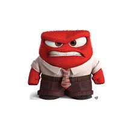

樂樂是一隻天生充滿快樂的小動物， 總是帶著陽光般的笑容。牠喜歡在草地上奔跑、 和朋友一起玩耍，對世界充滿好奇心。樂樂最喜歡的事情是聽音樂 、聞花香和享受自由自在的生活。無論遇到什麼困難，樂樂總能保持樂觀， 用微笑感染周圍的人。牠的性格活潑開朗，總能帶來歡樂和溫暖， 讓大家覺得生活充滿希望與美好。
怒怒是一隻性格直率的小動物，容易因小事生氣， 但其實心地善良。牠喜歡講道理、保護自己和朋友， 不喜歡被忽視或不公平的事情。怒怒的表情經常皺著眉頭， 看起來很嚴肅，但一旦熟悉了牠，就會發現牠很重感情。 怒怒雖然容易生氣，但也是最可靠的朋友，遇到危險時總是勇敢挺身而出。 牠的存在讓周圍的人懂得珍惜， 也增添了生活的真實感。